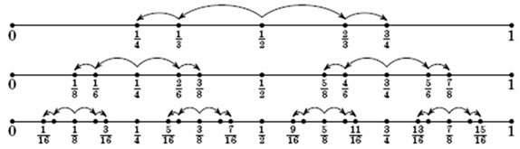

Authors: B. Vysokanov, N. Medved, V. Bragin
The teacher grades tests on a scale from 0 to 100. The school can change the upper bound of the scale to any other natural number, recalculating the estimates proportionally and rounding up to integers. A non-integer number, when rounded, changes to the nearest integer; if the fractional part is equal to 0.5, the direction of rounding can be either up or down and it can be different for each question. $($For example, an estimate of 37 on a scale of 100 after recalculation in the scale of 40 will go to 37 · 40/100 = 14.8 and will be rounded to 15$)$.
The students of Peter and Valerie got marks, which are not 0 and 100. Prove that the school can do several conversions so that Peter’s mark becomes b and Valerie’s mark becomes a $($both marks are recalculated simultaneously$)$.
We will denote the estimate "a marks from n possible ones" by a/n. The marks 0/n and n/n will be called extreme.
Lemma 1. If we successively change the scales in the order 100 → 99 → 98 → 97 → ... → 3 → 2, then any non-bound estimate of a/100 turns into 1/2.
Proof. It suffices to note that for these scale replacements the non-bounded estimates remain non-bounded, since for all k $>$ 1 the estimate 1/k is closer to any non-bound estimate of the form $a/(k + 1)$ than 0/k; then, at the next step after rounding, the score 0/k (similar to k / k) could not be obtained. Thus, in the end there will be some non-bounded estimate in a two-point scale, that is, 1/2.
Lemma 2. A natural number k is given. If we change the scales in the order $2 → 3 → 4 → 6 → 8 → ... → 2 \times 2^s → 3 \times 2^s → 2 \times 2^{s + 1} → ... → 2^k$, then we can obtain from the initial estimate of 1/2 any estimate of the form $(2r + 1) / 2^k$, where 0 ≤ r $<$ $2^k-1$.
Proof. We proceed by induction on k.
Base (k = 1). No operations occurred, the initial state is 1/2.
Induction step. Consider the case when r is odd. By the induction hypothesis, we can obtain the estimate $r/2^{k-1}$ for the first 2 (k - 2) substitutions of the scales. Let's find out what happens when we go to the next scale $(2^{k-1} → 3 \times 2^{k-2}). 3 \times 2^{k-2} = 3/2 \times 2^{k-1}$, therefore the estimate of r goes to 3r/2. This half-integer number is rounded to $(3r + 1)/2$. When translating into the final scale $(3 \times 2^{k-2} → 2k)$, the estimate $(3r + 1)/2$ will go to $4/3 \times (3r + 1)/2 = 2r + 2/3$, which is rounded to 2r + 1. The case of even r is analysed in a similar way, with the following sequence of estimates: r + 1 → 3r/2 + 1 → 2r + 1.

The first six steps of the algorithm are from Lemma 2.
Each next pair of steps contains two copies of the previous pair, compressed twice.
Lemma 3. Any non-bound estimate of the form a/100 can be obtained from some odd estimate on a scale from 0 to 256 as a result of the change of scales 256 → 100.
Proof. We can prove this by contradiction: suppose that some estimate of a/100 is not obtained by such an action. Then in the interval $(a/100 - 1/200, a/100 + 1/200$)$ there are no fractions of the form $(2r + 1)/256$. But the length of this interval is 1/100, and the distance between adjacent fractions of this kind is 1/128. This is a contradiction.
Now we solve the problem. In the beginning, by the algorithm from Lemma 1, we reduce both estimates to the state 1/2. Then, acting according to Lemma 2, we obtain from two copies of 1/2 any pair of odd estimates on a scale from 0 to 256. Lemma 3 ensures that if we return to the original scale from 0 to 100, we can obtain any pair of estimates.
See the solution above.
As a matter of fact, it is proved that by means of scale substitutions, any results of any number of participants can be obtained from any initial numbers.